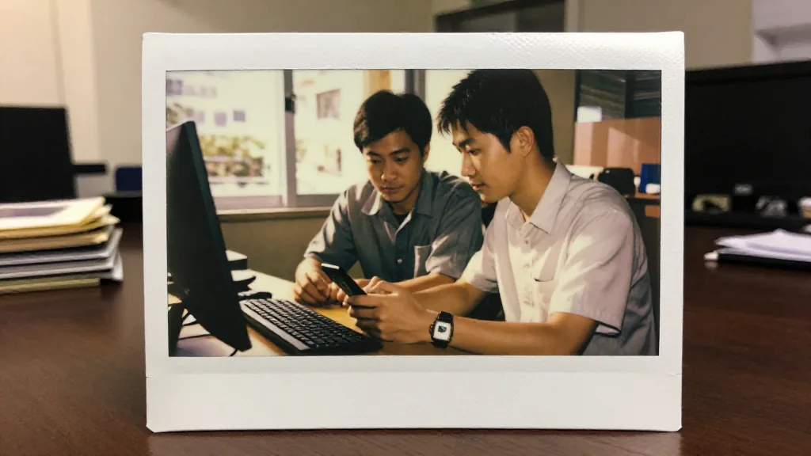
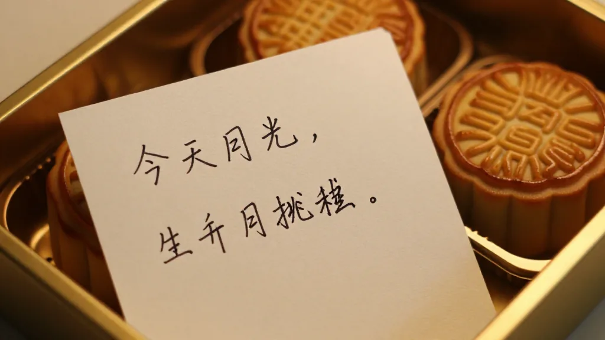
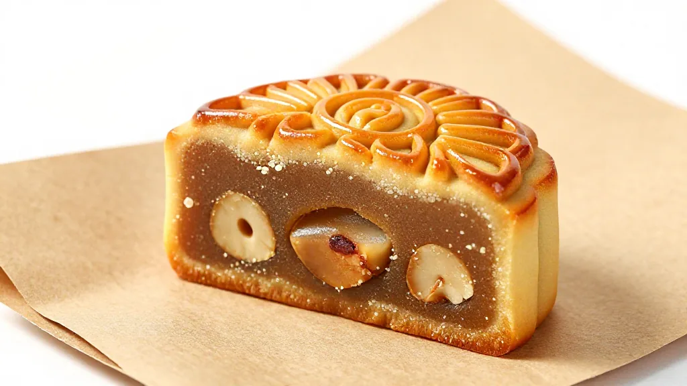

【鄭哥點評】 欄目：鄭哥博客點評
《一盒月餅寄德國：Frank 17 年後嘅一封郵件》

圖片由 AI輔助創作（Z-Image-Turbo）
鄭哥 Hany · 2026 年 9 月 21 日（中秋前夕）
2026 年中秋前夕——農曆八月十四——香港銅鑼灣嘅月餅店，已經排晒長龍。我喺後巷揀咗一盒廣州蓮蓉月餅，「皇上皇」金箔盒，四隻裝，寫住「福、祿、壽、喜」。
呢盒月餅，唔係寄俾屋企人，亦唔係送俾同事。
我寄去德國斯圖加特，寫住一個 17 年前嘅名字——
Frank Müller，WTS GmbH，Stuttgart, Germany.
他係我哋 2009 年嗰個老人機項目嘅德國股東之一，亦係我哋到今日都仲有來往嘅老朋友。
一、17 年前嘅那個下午
圖片由 AI輔助創作（Z-Image-Turbo）
2009 年，我哋同德國客戶 WTS 合作做老人機。WTS 嘅股東係 Frank 同 Dick，總部喺斯圖加特，主要做老人機，市場喺德國南部同奧地利。Frank 派咗一名員工到我哋廣州越秀江灣公司，一住就兩三個月。
嗰陣時，廣州仲未起地鐵 6 號線，越秀嗰邊嘅文具店同塑膠廠仲好旺。我哋同嗰位派駐員工，日頭一齊去華強北搵零件，去深圳公明搵工廠，夜晚一齊食腸粉——佢慢慢識講幾句廣東話，「唔該」、「多謝」、「靚女」，餐廳老闆娘都笑到花枝亂墜。
嗰一年，做老人機嘅方案要四頻：
GSM 850 / 900 / 1800 / 1900 MHz — 四個頻段，必須同時支持
當時諾基亞同愛立信嘅小機仲未做到咁平，深圳山寨機好多——三碼機、五碼機，平到幾百蚊一部。但客戶要嘅係德國 TÜV 認證、要歐盟 CE、要德語菜單——呢啲規格，山寨機做唔到。
Frank 嗰陣時成日飛廣州，有時從法蘭克福轉機到白雲機場，拎住一袋德國香腸同朱古力，「鄭哥，呢啲寄俾你哋屋企人」。我哋後來都成日回禮——廣州粵菜、鐵觀音、潮州單叢，就係咁，2009 年嗰一年，訂單同禮物，一齊喺度流轉。
二、四頻老人機 + 50 萬台嘅考驗

圖片由 AI輔助創作（Z-Image-Turbo）
為咗做呢個四頻方案，我哋同深圳陶總嘅工廠反覆開模、調試、驗證。陶總以前從波導出嚟，嗰一幫人同後來傳音嘅竺兆江，當年都係同事。
呢條「波導幫」嘅人脈網絡，係嗰個年代中國手機產業鏈嘅縮影——從波導，到深圳華強北，到非洲傳音，到東南亞 Vsmart。我哋就喺呢條鏈條上，做德國市場。
2009 年底，第一批四頻老人機終於做咗出嚟。Frank 試咗一個月，「德語菜單 OK、緊急呼叫 OK、大字體 OK」，即刻批首批 50 萬台——500K。
嗰個年代，50 萬台係大單。我哋工廠三班倒趕工，嗰一年聖誕前夕，全部發咗出去。Frank 喺斯圖加特寫咗張卡寄過嚟：
「Hany, you are not only our supplier. You are our friend. — Frank」
嗰張卡，我到今日都仲留住。
三、17 年後嘅一封電郵
圖片由 AI輔助創作（Z-Image-Turbo）
2026 年中秋前夕，我打開電郵，見到一封從斯圖加特寄嚟嘅信：
「Dear Hany, I know it's Mid-Autumn Festival soon. Frank told me a story from 2009 about a Guangzhou office, a German intern, and 500K senior phones. I am his son, Lukas. My father is 72 now and still talks about your team. May I order 100 boxes of your Cantonese mooncakes for our family and our old customers? — Lukas Müller, Stuttgart」
睇完呢封信，我喺銅鑼灣嘅茶餐廳坐咗成個鐘。
Frank 72歲。 佢個仔 Lukas 接手咗 WTS 嘅部分業務。而家佢哋唔再做老人機——轉咗做 IoT 醫療設備，但嗰份對中國製造嘅信任，仲喺度。
我即時回咗封信：
「Lukas, the mooncakes are on me this time. Tell your father: Hany is still here, and the friendship is still here. — Hany」
然後我叫助理去皇上皇訂咗 100 盒廣州蓮蓉月餅，金箔盒、四隻裝、加埋一份手寫信——「To: Frank & Lukas, Stuttgart. From: Hany, Hong Kong & Guangzhou. 中秋快樂。」
四、呢盒月餅嘅「附加值」

圖片由 AI輔助創作（Z-Image-Turbo）
一盒廣州蓮蓉月餅，零售價大概 280 蚊港紙，100 盒就 28,000 蚊。加上順豐國際到斯圖加特嘅運費，再加德國入口關稅同增值稅，大概 6,000 歐羅。
即係話，呢份中秋禮物成本大概 5 萬蚊港紙左右。
5 萬蚊，買唔到一個 SaaS 訂閱、買唔到一個 GPU 月費、買唔到深圳一個車位。但係——
5 萬蚊，可以買到一段 17 年嘅跨國友誼續命。
呢啲錢，換返嚟嘅嘢：
- ✅ Lukas 接手 WTS 之後，第一個想搵嘅中國合作方——係我哋。
- ✅ IoT 醫療設備嘅新訂單，可能 50 萬歐元 / 年起步。
- ✅ Frank 喺斯圖加特商業圈嘅口碑——「呢個香港人，送月餅送到第三代」。
外貿老炮兒都識呢條數：「人情投資，係 ROI 最高嘅業務拓展。」
五、今日嘅「跨國友誼」有幾難？
2026 年嘅外貿環境，唔同 2009 年。
| 維度 | 2009 | 2026 |
|---|---|---|
| 溝通工具 | Skype + Email | WhatsApp + Zoom + 微信 |
| 物流時效 | 30-40 天海運 | 3-5 天空運 / 順豐國際 |
| 付款方式 | T/T 電匯 | 信用證 + T/T + 數位人民幣 |
| 信任建立 | 派駐員工 2-3 個月 | 線上訪廠 + VR 驗廠 |
| 文化差異 | 德國 TÜV + 粵菜 = 「跨文化融合」 | AI 翻譯 + 文化 IP = 「雲端融合」 |
工具進步咗，但「人同人嘅連結」，本質冇變。
我哋今日用 AI 寫 email，用 AI 翻譯合同，用 AI 做訂單管理——但中秋嗰盒月餅，仍然要人手揀、人手寫、人手寄。
AI 唔可以代你食月餅，AI 唔可以代你寫手寫卡，AI 唔可以代你同 Frank 飲返杯 1990 年嘅 Riesling。
呢啲「人味」嘅嘢，就係鄭哥博客一直強調嘅——「用心交朋友」。
六、訂單是一時嘅，信任是一輩子嘅
2009 年嗰 50 萬台老人機，今日 0 蚊價值——個型號已經退役，零件都搵唔到。
但 Frank 嗰張親筆卡，今日仲擺喺我旺角嘅辦公枱。
17 年後嘅今日，我寄出呢盒月餅，唔係為咗賣嘢——係為咗講俾我個仔、我班同事聽：
外貿呢行，技術會過時，產品會過時，平台會過時，
但「人同人嘅信任」，永遠唔會過時。
你呢，做咗幾耐生意？你有冇一個 Frank，喺遠方仲記得你？
七、寫俾同行嘅 3 個建議
建議 1：每年中秋，做一個「人情清單」
每年農曆八月十五之前，拎出一張紙，寫低過去 10 年你所有仲有聯絡嘅老客戶、老供應商、老朋友。然後每人寄一份手寫信、一份小禮物。成本唔使多，誠意先至係皇道。
建議 2：跨國友誼需要「儀式感」
德國人重視節日消費同禮儀——聖誕、朱古力、復活節、朱古力蛋。中國人重視中秋、春節、端午。呢啲「儀式感」，就係跨國友誼嘅黏合劑。
建議 3：傳承比交易更重要
Frank 而家 72 歲，佢個仔 Lukas 接手咗部分業務。呢就係「第二代交接」嘅開始。如果你嘅客戶開始交俾仔女，你就要開始同新一代打交道。換位思考、學佢哋嘅語言、陪佢哋嘅文化——呢就係「人情生意」嘅長期主義。
八、海豐人嘅中秋味
講到中秋，我哋海豐人嘅味道，唔係月餅——係「菜粿」。
我阿媽過身之前，每年中秋前一個禮拜，都會喺海豐老屋嘅灶頭，搓一大籠菜粿——糯米粉皮、芋頭餡、蝦米、臘肉，蒸出嚟一籠 30 隻，夠晒一家十幾口食到中秋夜。
我喺香港呢 20 幾年，試過淘大嘅、加州嘅、奇華嘅、美心嘅——但都唔係阿媽嗰個味。
味覺，係記憶最尾嘅一道防線。
你記得嘅，唔係嗰隻月餅——係嗰個搓粉嘅人。
Frank 72 歲，佢今日收到呢盒廣州蓮蓉月餅，佢記得嘅，唔會係蓮蓉——會係 2009 年廣州越秀嗰個越秀公園散步嘅下午、嗰碗腸粉、嗰杯普洱。
九、結語：呢盒月餅嘅三個信號
- 信號 1：跨國信任要「傳承」—— 第一代老去，第二代接手，呢盒月餅就係橋樑。
- 信號 2：人情投資嘅 ROI，遠高於廣告投放—— 5 萬蚊換到一個德國客戶二代嘅信任，邊個 KOL 可以做到？
- 信號 3：傳統節日 + 跨國友誼 = 長期生意—— 中秋、春節、朱古力復活節，呢啲都係「人情」嘅錨點。
你呢，中秋會寄月餅俾你嘅老客戶嗎？
📞 合作聯繫
WhatsApp: +852 6641 7912
七善門科技 · 星辰算力
#用心交朋友 #中秋月餅 #廣州蓮蓉 #皇上皇 #德國斯圖加特 #Frank #Lukas #WTS #跨國友誼 #外貿老炮兒 #海豐菜粿 #中秋味覺 #人情投資 #傳承生意 #七善門科技 #星辰算力
[ZHENG GE REVIEW] Column: Hany Blog Review
"A Box of Mooncakes to Germany: Frank's Email 17 Years Later"
Image AI-assisted (Z-Image-Turbo)
Hany Zheng Ge · September 21, 2026 (eve of Mid-Autumn)
On the eve of Mid-Autumn 2026 — the 14th day of the 8th lunar month — the mooncake queue at Causeway Bay was already around the block. I picked up a box of Guangzhou lotus-seed-paste mooncakes from the back lane: a "Huangshanghuang" gold-foil box, four cakes, engraved "Fu, Lu, Shou, Xi" — fortune, prosperity, longevity, joy.
This box wasn't for family or colleagues.
It went to Stuttgart, Germany, addressed to a name from 17 years ago —
Frank Müller, WTS GmbH, Stuttgart, Germany.
He was one of the German shareholders on our 2009 senior-phone project — and the friend we still keep in touch with today.
1. That Afternoon, 17 Years Ago
Image AI-assisted (Z-Image-Turbo)
In 2009 we worked with the German customer WTS on senior phones. WTS's shareholders were Frank and Dick, headquartered in Stuttgart, focused on senior phones for southern Germany and Austria. Frank sent an employee to our Yuexiu office in Guangzhou — he stayed two or three months.
Guangzhou then had no Metro Line 6 yet; the stationery shops and plastics factories around Yuexiu were still busy. Day after day we'd head to Huaqiangbei for parts, to Shenzhen Gongming for tooling, and at night we'd eat cheung fun together — the visiting staffer slowly picked up some Cantonese: "唔該," "多謝," "靚女" — the restaurant owner laughed till the flowers fell.
That year, the senior-phone spec needed quad-band:
GSM 850 / 900 / 1800 / 1900 MHz — four bands, all required.
Back then Nokia and Ericsson handsets weren't cheap yet, and Shenzhen's "Shanzhai" market was huge — three-code, five-code machines for a few hundred RMB. But our customer needed German TÜV, EU CE, German-language UI — Shanzhai couldn't deliver that.
Frank flew to Guangzhou constantly — sometimes via Frankfurt to Baiyun airport — and would bring a bag of German sausages and chocolates: "Hany, these are for your family." We'd reciprocate: Cantonese food, Tieguanyin, Chaozhou Dancong. That's how 2009 worked — orders and gifts, both in circulation.
2. Quad-Band + 500K — The Real Test
Image AI-assisted (Z-Image-Turbo)
To make that quad-band spec, our partner factory Mr. Tao's team in Shenzhen iterated tooling, tuning, validation. Tao had come out of Bird (波導); that whole crowd were former colleagues of Zhu Zhaojiang — who would later found Tecno (传音).
That "Bird alumni" network was a snapshot of China's handset chain back then — from Bird, to Huaqiangbei, to Tecno in Africa, to Vsmart in Vietnam. We were on that chain, supplying Germany.
By late 2009, the first quad-band senior phones came off the line. Frank tested one for a month: "German menu OK, emergency call OK, large fonts OK" — and released the first batch of 500,000 units — 500K.
Back then, 500K was a big order. Three shifts ran non-stop; everything shipped before Christmas. Frank mailed a card from Stuttgart:
"Hany, you are not only our supplier. You are our friend. — Frank"
I still have that card.
3. An Email, 17 Years Later
Image AI-assisted (Z-Image-Turbo)
On the eve of Mid-Autumn 2026, I opened an email from Stuttgart:
"Dear Hany, I know it's Mid-Autumn Festival soon. Frank told me a story from 2009 about a Guangzhou office, a German intern, and 500K senior phones. I am his son, Lukas. My father is 72 now and still talks about your team. May I order 100 boxes of your Cantonese mooncakes for our family and our old customers? — Lukas Müller, Stuttgart"
I sat in the Causeway Bay tea-house for an hour after reading it.
Frank is 72. His son Lukas has taken over part of WTS. They don't do senior phones anymore — they've moved into IoT medical devices — but the trust in Chinese manufacturing is still there.
I replied immediately:
"Lukas, the mooncakes are on me this time. Tell your father: Hany is still here, and the friendship is still here. — Hany"
Then I told my assistant to order 100 boxes of Huangshanghuang lotus-seed-paste mooncakes, gold-foil box, four-cake pack, plus a handwritten letter: "To: Frank & Lukas, Stuttgart. From: Hany, Hong Kong & Guangzhou. Happy Mid-Autumn."
4. The "Added Value" of This Box
Image AI-assisted (Z-Image-Turbo)
One box of Cantonese lotus-seed-paste mooncakes retails around HKD 280; 100 boxes is HKD 28,000. Add SF Express International to Stuttgart, plus German import duty and VAT, and you arrive at roughly EUR 6,000.
So this Mid-Autumn gift costs about HKD 50,000 all-in.
HKD 50K won't buy a SaaS subscription, won't buy a GPU month, won't buy a parking spot in Shenzhen. But —
HKD 50K can buy another 17 years of a cross-border friendship.
What you get back for that money:
- ✅ Lukas, on taking over WTS, will look for a Chinese partner — us.
- ✅ New IoT-medical orders, potentially EUR 500K / year to start.
- ✅ Frank's word in Stuttgart's business circle — "that Hong Kong guy sent mooncakes across three generations."
Every veteran trader knows the math: "Relationship investment has the highest ROI of any business development."
5. How Hard Is Cross-Border Friendship Today?
The 2026 trade environment isn't 2009.
| Dimension | 2009 | 2026 |
|---|---|---|
| Comms | Skype + Email | WhatsApp + Zoom + WeChat |
| Logistics | 30-40 days sea | 3-5 days air / SF International |
| Payment | T/T wire | L/C + T/T + Digital RMB |
| Trust-building | 2-3 month on-site staff | Online audits + VR factory tours |
| Culture gap | German TÜV + Cantonese food | AI translation + culture IP |
Tools have improved, but the link between people hasn't changed.
We use AI to draft emails, translate contracts, manage orders — but the Mid-Autumn mooncake box is still chosen, written, and sent by hand.
AI can't eat a mooncake for you; AI can't write your handwritten card; AI can't drink a 1990 Riesling with Frank.
That's the "human touch" Hany's blog keeps coming back to — "用心交朋友".
6. Orders Are One-Time; Trust Is for Life
Those 500K senior phones from 2009 are worth zero today — that model is retired, parts unobtainable.
But Frank's handwritten card still sits on my desk in Mong Kok.
Today, 17 years on, I'm not sending this box to sell anything — I'm sending it so my son and my team can hear:
In foreign trade, tech goes obsolete, products go obsolete, platforms go obsolete,
but trust between people never goes obsolete.
How long have you been in business? Do you have a Frank somewhere far away who still remembers you?
7. Three Notes for Fellow Traders
Note 1: Make a "Relationship List" Every Mid-Autumn
Before the 15th of the 8th lunar month each year, get a sheet of paper and list every old customer, supplier, and friend you've stayed in touch with over the past 10 years. Send each one a handwritten note and a small gift. The cost doesn't have to be high — sincerity is the point.
Note 2: Cross-Border Friendship Needs Ritual
Germans take Christmas, chocolate, Easter seriously. Chinese people take Mid-Autumn, Spring Festival, Dragon Boat seriously. These rituals are the glue of cross-border friendship.
Note 3: Succession Beats Transaction
Frank is 72; his son Lukas has taken on part of the business. This is the start of "second-generation handover." When your customers hand off to their children, you have to start engaging the next generation — speak their language, learn their culture. That's the long game of "relationship business."
8. A Haifeng Person's Mid-Autumn Flavor
Speaking of Mid-Autumn, for us Haifeng people the flavor isn't mooncakes — it's cai guo (菜粿).
Before my mother passed, every year the week before Mid-Autumn she'd be at the old Haifeng stove, kneading a big batch of cai guo — glutinous-rice skin, taro filling, dried shrimp, cured pork — steaming out a basket of 30, enough to feed a dozen mouths through the night.
I've spent 20-odd years in Hong Kong trying Amoy, California, Kee Wah, Maxim — none of them taste like my mother's.
Taste is the last line of defense in memory.
You don't remember the mooncake — you remember the person who kneaded the dough.
Frank is 72; when he opens this box of Cantonese lotus-seed-paste mooncakes, what he'll remember isn't the lotus paste — it'll be that 2009 afternoon walking in Yuexiu Park, that bowl of cheung fun, that cup of pu'er.
9. Closing: Three Signals From This Box
- Signal 1: Cross-border trust must be passed down. First generation ages out, second takes over — this box is the bridge.
- Signal 2: Relationship ROI far exceeds ad spend. What KOL can deliver a second-generation German customer's trust for HKD 50K?
- Signal 3: Traditional festivals + cross-border friendship = long-term business. Mid-Autumn, Spring Festival, chocolate-Easter — these are anchors of "human connection."
Will you send mooncakes to your old customers this Mid-Autumn?
📞 Get in touch
WhatsApp: +852 6641 7912
Qishanmen Tech · Star Compute
#用心交朋友 #MidAutumnMooncakes #CantoneseLotusSeedPaste #StuttgartGermany #Frank #Lukas #WTS #CrossBorderFriendship #ForeignTradeVeteran #HaifengCaiGuo #TasteMemory #RelationshipInvestment #GenerationalBusiness #QishanmenTech #StarCompute